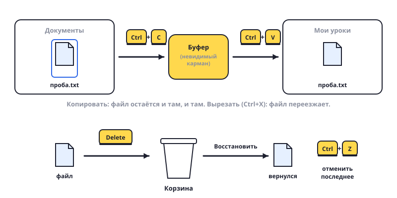

Копировать, вставить, удалить
Три самых главных приёма на компьютере. Работают везде: с файлами, с текстом, с картинками.

Шаги
- Выдели файл — кликни на него один раз. Он подсветится.
- Копировать: Ctrl+C. Компьютер запомнил файл (в «буфер обмена» — невидимый карман).
- Перейди в другую папку и нажми Ctrl+V — вставить. Теперь файл есть в двух местах.
- Вырезать: Ctrl+X, потом Ctrl+V в другом месте. Файл переедет, а не скопируется.
- Удалить: выдели и нажми Delete. Файл попадёт в Корзину 🗑️ на рабочем столе.
- Ошибся? Достань из Корзины: открой Корзину, правая кнопка на файле → «Восстановить». Он вернётся туда, где был.
- Отменить последнее действие: Ctrl+Z. Волшебная кнопка «как было».
- Выделить несколько файлов: держи Ctrl и кликай по ним. Или Ctrl+A — выделить всё.
Попробуй сам: создай в «Документах» файл: правая кнопка → Создать → Текстовый документ, назови «проба». Скопируй его в папку «Мои уроки». Удали копию, а потом восстанови её из Корзины.
Ctrl+C, Ctrl+V, Ctrl+Z — выучи эти три сочетания наизусть. Они работают в Word, в браузере, в играх — везде.